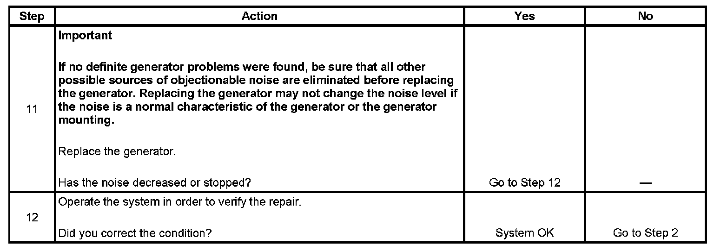

Generator Noise Diagnosis
GENERATOR NOISE DIAGNOSIS
DIAGNOSTIC AIDS
Noise from a generator may be due to electrical or mechanical noise. Electrical noise magnetic whine usually varies with the electrical load placed on the generator and is a normal operating characteristic of all generators. When diagnosing a noisy generator, it is important to remember that loose or misaligned components around the generator may transmit the noise into the passenger compartment and that replacing the generator may not solve the problem.
TEST
Step 1 - Step 10:
Step 11 - Step 12:
